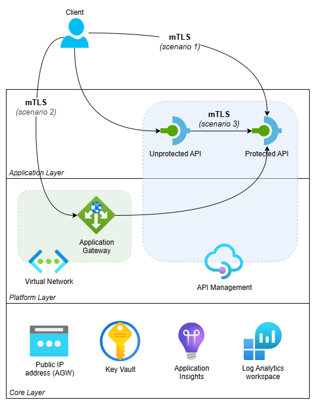
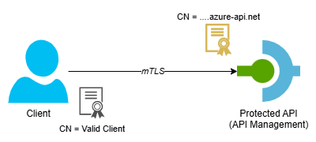
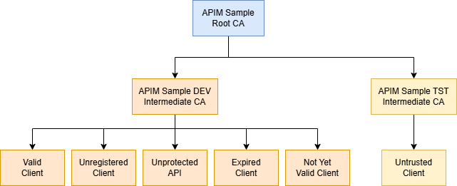

Validate client certificates in API Management

This blog post is the start of a series on how to work with client certificates in Azure API Management to set up a mutual TLS (mTLS) connection. In the series, I’ll cover both the validation of client certificates in API Management and how to connect to backends with mTLS using client certificates.
While Azure’s official documentation provides excellent guidance on setting up client certificates via the Azure Portal, this series takes it a step further. We’ll dive into using Bicep to automate the process.
Topics covered in this series:
- Validate client certificates in API Management (current)
- Validate client certificates in API Management when it’s behind an Application Gateway
- Securing backend connections with mTLS in API Management
In this first post, we’ll cover the basics of how to validate client certificates in API Management. We’ll deploy both API Management and an API using Bicep. We’ll also have a look at how to upload both CA and client certificates in API Management.
Table of Contents
- Solution Overview
- Enable Client Certificate on API Management
- Validate Client Certificate Using Policy
- Validate Client Certificate Using the Context
- Considerations
- Conclusion
Solution Overview
I’ve created an Azure Developer CLI (azd) template called mTLS with Azure API Management and Application Gateway that demonstrates three scenarios: validating client certificates when calling API Management directly, validating them when API Management is behind an Application Gateway and securing connections from API Management to backend systems using mTLS. See the following diagram for an overview of the solution.

This blog post focuses on scenario 1: validating client certificates when calling API Management directly. In this scenario, a client calls a Protected API using mTLS. API Management validates the client certificate. See the following diagram for the flow.

The template includes self-signed certificates, but you can also use client certificates from a public CA. Using Generate and export certificates for point-to-site using PowerShell as a guide, I’ve created the following tree of certificates.

- APIM Sample Root CA: is the root CA for this sample
- APIM Sample DEV Intermediate CA: is intermediate CA for a ‘dev’ environment
- Valid Client: is registered in API Management as a valid client
- Unregistered Client: is NOT registered in API Management and should be blocked when explicitly checking client certificates
- Unprotected API: is used when the Unprotected API calls the Protected API using mTLS (used in Securing backend connections with mTLS in API Management)
- Expired Client: is an expired certificate for testing purposes
- Not Yet Valid Client: is a certificate that is valid in the future and used for testing purposes
- APIM Sample TST Intermediate CA: is intermediate CA for a ‘test’ environment
- Untrusted Client: can be used to test what happens when certificates from an untrusted intermediate CA are used
- APIM Sample DEV Intermediate CA: is intermediate CA for a ‘dev’ environment
You can find more details about the certificates here.
If you want to deploy and try the solution, check out the getting started section for the prerequisites and deployment instructions. For this first blog post, you don’t have to include the Application Gateway. When selecting the API Management SKU, keep the following in mind:
- Use a v2 tier like BasicV2 if you want a quick deployment and don’t need to validate the certificate chain of client certificates.
- Use a non-v2 tier like Developer if you need certificate chain validation. The deployment will take longer though.
To try out the implementation, follow the instructions in this demo.
Enable Client Certificate on API Management
The first step is to enable mTLS on API Management if you’re using the Consumption tier or a v2 tier like BasicV2. To do this, set the enableClientCertificate property to true on the API Management service resource:
resource apiManagementService 'Microsoft.ApiManagement/service@2025-03-01-preview' = {
...
properties: {
...
enableClientCertificate: true
}
}
If you don’t set this property to true, validating the client certificate fails because the client certificate is missing.
The documentation suggests that this is only meant to be used for Consumption SKU Service, but it is also necessary for v2 tier SKUs.
There are a few things to note:
- For the Consumption tier, setting
enableClientCertificatetotruerequires clients to present a certificate on every API call, even for APIs without any certificate validation logic. For non-Consumption tiers, this is not the case. - For the Developer, Basic, Standard and Premium tiers, you don’t have to set it to
trueto enable mTLS, but I haven’t seen issues if you do.
Validate Client Certificate Using Policy
The simplest way to validate a client certificate is to use the validate-client-certificate policy. Here’s a basic example:
<validate-client-certificate validate-not-before="true"
validate-not-after="true"
ignore-error="false"
validate-revocation="false"
validate-trust="false">
<identities>
<identity subject="CN=Valid Client"
issuer-subject="CN=APIM Sample DEV Intermediate CA" />
</identities>
</validate-client-certificate>
The policy checks whether the client certificate meets the specified criteria. The validate-not-before and validate-not-after attributes are set to true, which means the policy checks that the certificate is currently within its validity period. The ignore-error attribute is set to false, so the request is rejected when validation fails. The validate-revocation and validate-trust attributes are set to false here, so revocation and trust chain checks are skipped.
Inside the <identities> element, you define which certificate identities are accepted. In this example, only a certificate with the subject CN=Valid Client issued by CN=APIM Sample DEV Intermediate CA is accepted.
Note that in this example we’re not verifying that the certificate was issued by a trusted CA. This implementation is not secure, because any certificate that has the correct subject and issuer subject is valid, even if it’s signed by another issuer. To be able to validate the certificate chain for self-signed client certificates, you need to upload the CA certificates in API Management. This is not supported by the Consumption and v2 tiers of API Management as described on How to add a custom CA certificate in Azure API Management. So, if you can’t verify the certificate chain, you should also verify for example the thumbprint to make sure it’s a certificate that you trust:
<identity subject="CN=Valid Client"
issuer-subject="CN=APIM Sample DEV Intermediate CA"
thumbprint="c9af2c74a22dbca898bf291e8b84c68e5d3661f0" />
Tip: Use named values to vary the thumbprint between environments. If the number of certificates differs between environments and you need more flexibility, use the context approach described further in this post.
Upload CA Certificates
If you’re using the Developer, Basic, Standard or Premium tier, you can upload CA certificates in API Management. See How to add a custom CA certificate in Azure API Management for guidance on how to upload CA certificates through the Azure Portal.
In our sample, we need to upload the “APIM Sample Root CA” certificate to the Root certificate store and the “APIM Sample DEV Intermediate CA” certificate to the CertificateAuthority certificate store. We can do this with Bicep via the certificates property on the API Management service resource:
resource apiManagementService 'Microsoft.ApiManagement/service@2025-03-01-preview' = {
...
properties: {
...
enableClientCertificate: true
certificates: [
{
encodedCertificate: loadTextContent('<path>/root-ca.without-markers.cer')
storeName: 'Root'
}
{
encodedCertificate: loadTextContent('<path>/dev-intermediate-ca.without-markers.cer')
storeName: 'CertificateAuthority'
}
]
}
}
This snippet loads the certificates from the corresponding .cer files. The value of the encodedCertificate property must be a base64 representation of the certificate without the private key. You can obtain this for example by selecting the Base-64 encoded X.509 (.CER) option when exporting the certificate from the Certificate Manager (Windows). The result is a file that looks like this:
-----BEGIN CERTIFICATE-----
MIIDCDCCAfCgAwIBAgIQTA+cOPepk41ICdLhY7AUwDANBgkqhkiG9w0BAQsFADAeMRwwGgYDVQQD
DBNBUElNIFNhbXBsZSBSb290IENBMB4XDTIzMTAyNzA5MDUxMFoXDTI2MTAyNzA5MTUxMFowHjEc
............................... TRUNCATED ..................................
OAp+KJ+8AHZ6Tb6PVSgZe+pIag7U+t+2U/msy0vRZvkDNpzrtz1AoFURpFNmERet95MOLxxyupd/
uLmEJRy8HbiC5HLkKWlQSmJEbXcNw3P8sEgub0/SblXOSV7gYSos
-----END CERTIFICATE-----
If you use this exported file directly, the API Management deployment will fail with the following error: Invalid parameter: The certificate's data file format associated with Intermediates must be a Base64-encoded .pfx file. To avoid this, remove the -----BEGIN CERTIFICATE----- and -----END CERTIFICATE----- markers from the .cer file.
After deploying the certificates, set validate-trust to true in the validate-client-certificate policy so it checks if the client certificate is issued by a trusted CA certificate chain. See validate-using-policy.operation.xml for the full policy implementation and api-management.bicep for the API Management configuration.
Validate Client Certificate Using the Context
The second option to validate a client certificate is to use the context.Request.Certificate property in a policy expression. This property holds the client certificate that was used to call the API.
The documentation Certificate validation with context variables states that the
negotiateClientCertificateproperty should be set toTruein the API Management instance’s hostnameConfiguration. While this doesn’t appear to be necessary for the minimal setup demonstrated in this post, it could be a requirement for your specific configuration.
See the following snippet for a sample implementation:
<set-variable name="certificateValidationResult" value="@{
if (context.Request.Certificate == null)
{
return "ClientCertificateNotFound";
}
var now = DateTime.Now; // We are using DateTime.Now because NotBefore and NotAfter are in local time
if (context.Request.Certificate.NotBefore > now)
{
return "ClientCertificateNotYetValid";
}
if (context.Request.Certificate.NotAfter < now)
{
return "ClientCertificateExpired";
}
return null;
}" />
<choose>
<when condition="@(context.Variables.GetValueOrDefault<string>("certificateValidationResult") != null)">
<trace source="validate-using-context" severity="error">
<message>@("Client certificate validation failed: " + context.Variables.GetValueOrDefault<string>("certificateValidationResult"))</message>
</trace>
<return-response>
<set-status code="401" />
</return-response>
</when>
</choose>
This snippet uses a set-variable policy to evaluate the certificate and store a validation result. It first checks whether a certificate was provided at all. Then it checks whether the certificate’s validity period covers the current date and time. DateTime.Now is used rather than DateTime.UtcNow because the NotBefore and NotAfter properties are in local time. If any check fails, a descriptive string is returned. The choose block that follows traces the validation result for troubleshooting purposes and rejects the request with a 401 if the variable contains a value.
This only checks that a client certificate was provided with a valid date range. It doesn’t verify whether the certificate is trusted. There are two ways to make this more secure: either check the certificate chain or verify the thumbprint. You can also combine both.
Check Client Certificate Chain
If you’re using the Developer, Basic, Standard or Premium tier, you can add an additional check to verify the certificate chain.
First, you need to upload the relevant CA certificates as described in this section.
Then, add the extra check using context.Request.Certificate.VerifyNoRevocation() if you don’t have a revocation list configured and context.Request.Certificate.Verify() if you do:
<set-variable name="certificateValidationResult" value="@{
if (context.Request.Certificate == null)
{
return "ClientCertificateNotFound";
}
var now = DateTime.Now; // We are using DateTime.Now because NotBefore and NotAfter are in local time
if (context.Request.Certificate.NotBefore > now)
{
return "ClientCertificateNotYetValid";
}
if (context.Request.Certificate.NotAfter < now)
{
return "ClientCertificateExpired";
}
if (!context.Request.Certificate.VerifyNoRevocation())
{
return "ClientCertificateNotTrusted"
}
return null;
}" />
Both the Verify and VerifyNoRevocation methods also check if a certificate is expired or not yet valid, so you can simplify the policy expression to:
<set-variable name="certificateValidationResult" value="@{
if (context.Request.Certificate == null)
{
return "ClientCertificateNotFound";
}
if (!context.Request.Certificate.VerifyNoRevocation())
{
return "InvalidClientCertificate";
}
return null;
}" />
The downside is that you lose some detail about why a certificate was invalid.
Validate Against Uploaded Client Certificates
It’s also possible to check the provided client certificate against client certificates uploaded in API Management. These can be accessed using the context.Deployment.Certificates property to match against the thumbprint of the provided client certificate:
<set-variable name="certificateValidationResult" value="@{
if (context.Request.Certificate == null)
{
return "ClientCertificateNotFound";
}
var now = DateTime.Now; // We are using DateTime.Now because NotBefore and NotAfter are in local time
if (context.Request.Certificate.NotBefore > now)
{
return "ClientCertificateNotYetValid";
}
if (context.Request.Certificate.NotAfter < now)
{
return "ClientCertificateExpired";
}
if (!context.Deployment.Certificates.Any(c => c.Value.Thumbprint == context.Request.Certificate.Thumbprint))
{
return "ClientCertificateIdentityNotMatched";
}
return null;
}" />
The documentation on How to secure APIs using client certificate authentication in API Management describes how to upload a pfx client certificate using the Azure Portal. We can do the same using Bicep. Because we’re only validating the thumbprint, we don’t need the private key, so we can upload a .cer file using the Microsoft.ApiManagement/service/certificates resource:
resource validClientClientCertificate 'Microsoft.ApiManagement/service/certificates@2025-03-01-preview' = {
name: 'valid-client-client-certificate'
parent: apiManagementService
properties: {
data: loadTextContent('<path>/dev-valid-client.without-markers.cer')
}
}
Similar to the CA certificates, the value of the data property must be base64 and the -----BEGIN CERTIFICATE----- and -----END CERTIFICATE----- markers should be removed.
Note that we can’t use the certificates property on the API Management service resource for this. That property is reserved for CA certificates.
See protected-api.bicep for a sample and validate-using-context.operation.xml for the full policy implementation.
Considerations
There are a few differences in feature parity to keep in mind between Consumption and v2 tiers versus other tiers:
- Uploading CA certificates is not supported by the Consumption and v2 tiers. This means you can’t use
validate-trust="true"in thevalidate-client-certificatepolicy orcontext.Request.Certificate.Verify()/VerifyNoRevocation()in policy expressions to verify the certificate chain. If you do, all requests will fail. - For the Consumption and v2 tiers,
enableClientCertificatemust be explicitly set totrue. For non-v2 tiers it’s optional.
If you’re using a Consumption or v2 tier and need to ensure a certificate is trusted, consider verifying the thumbprint.
Conclusion
In this post, we’ve explored the basics of validating client certificates in API Management. As demonstrated, there are two ways to validate a client certificate. You can either use the validate-client-certificate policy or the context.Request.Certificate property.
Using Bicep is a great way to automate the deployment of your resources, including API Management and its APIs, to Azure. It also provides an easy way to deploy your CA and client certificates to API Management.
The end result of this blog post can be found in this template. In the next post, we’ll cover how to validate a client certificate in API Management when it’s positioned behind an Azure Application Gateway.